5.4 Organic Chemistry Arenes · Topic 18
Benzene structure, stability and electrophilic substitution
5.4 Organic Chemistry Arenes · Topic 18
本页严格按 Pearson Edexcel International Advanced Level Chemistry specification 的 Topic 18: Organic Chemistry - Arenes（18.1–18.6） 编排，主要依据项目内的 5.4 Organic Chemistry Arenes.pdf.pdf。解释采用中文，专业词汇保留 English，便于和 reaction mechanisms、spectroscopic evidence 及 exam wording 对照。
Learning objectives
学完本章后，你应该能够：
- use thermochemical、X-ray diffraction 和 infrared data 作为 benzene structure / stability 的 evidence；
- explain benzene 的 delocalised \(\pi\) system、p-orbital overlap、planarity 和 equal C-C bond lengths；
- explain why benzene resists bromination compared with alkenes；
- write benzene combustion、halogenation、nitration、sulfonation 和 Friedel-Crafts reactions；
- describe electrophilic substitution mechanisms，并说明 electrophile generation；
- explain why phenol reacts with bromine water more readily than benzene。
18.1 Structure and stability of benzene
Kekule model and delocalised model
早期 Kekule model 把 benzene 画成 six-membered ring with alternating C-C single / double bonds。这种 drawing 在 equations 中仍可使用，但它不能解释 benzene 的全部 properties。
现代 model：
- each carbon is sp\(^2\) hybridised，bond angles approximately 120°；
- each carbon forms three \(\sigma\) bonds：与两个 adjacent carbons 和一个 hydrogen / substituent；
- 每个 carbon 留下一个 unhybridised p orbital；
- neighbouring p orbitals overlap sideways，形成 continuous delocalised \(\pi\) system；
- \(\pi\) electron density 位于 ring plane 上方和下方；
- molecule planar，six C-C bonds equal。


Evidence from bond lengths
如果 benzene 真的是 Kekule cyclohexa-1,3,5-triene，应有两类 C-C bond：
- C-C single bond 约 \(154\ \mathrm{pm}\)；
- C=C double bond 约 \(134\ \mathrm{pm}\)。
但 X-ray diffraction 显示 benzene 的 six C-C bonds 都约为 \(140\ \mathrm{pm}\)，介于 single 和 double bond 之间。这说明 six bonds 等价，具有 intermediate bond order，是 delocalisation 的 evidence。

Thermochemical evidence: enthalpy of hydrogenation
Cyclohexene 只有 one C=C bond，hydrogenation enthalpy 约为：
\[ \ce{C6H10 + H2 -> C6H12}\qquad \Delta H=-120\ \mathrm{kJ\,mol^{-1}} \]
若 benzene 是有 three isolated C=C bonds 的 Kekule structure，预计：
\[ 3(-120)=-360\ \mathrm{kJ\,mol^{-1}} \]
但实际 benzene hydrogenation：
\[ \ce{C6H6 + 3H2 -> C6H12}\qquad \Delta H=-208\ \mathrm{kJ\,mol^{-1}} \]
实际 reaction less exothermic，说明 benzene 的 starting molecule 比 hypothetical Kekule structure 更 stable。约 \(152\ \mathrm{kJ\,mol^{-1}}\) 的 stability difference 可视为 delocalisation energy / aromatic stabilisation 的 evidence。
Saturation test and infrared evidence
Cyclohexene 的 localised C=C 能使 bromine water decolourise，发生 electrophilic addition。Benzene 不会在 ordinary conditions 下 decolourise bromine water，因为没有 localised double bond 可直接进行 addition。
Infrared evidence：
- alkene C=C 通常在约 \(1650\ \mathrm{cm^{-1}}\) 出现 absorption；
- benzene 不显示 typical isolated alkene peak at \(1650\ \mathrm{cm^{-1}}\)；
- benzene / arene ring 显示约 \(1450\)、\(1500\) 和 \(1580\ \mathrm{cm^{-1}}\) 的 characteristic absorptions。
因此 thermochemical、X-ray diffraction、saturation test 和 IR evidence 都支持 delocalised aromatic ring model。
18.2 Delocalised \(\pi\) bonding
Orbital picture
Benzene 的 six p orbitals overlap to form one continuous cyclic \(\pi\) system。这个 system 的 electron density spread over the whole ring，而不是集中在 three separate C=C bonds。
Delocalisation 解释：
- six C-C bonds identical；
- bond length intermediate between C-C and C=C；
- molecule planar and regular；
- benzene unusually stable；
- benzene prefers substitution，because substitution restores aromaticity，而 addition destroys it。
18.3 Resistance to bromination
Benzene vs alkene bromination
Alkene 的 localised \(\pi\) bond 是 electron-rich region，可 polarise \(\ce{Br2}\)，使 bromine molecule 产生 \(\ce{Br^{\delta+}}\) 和 \(\ce{Br^{\delta-}}\)，随后 electrophilic addition 形成 dibromo compound。
Benzene 的 \(\pi\) electrons 是 delocalised，ring 上没有某一个 localised high-electron-density C=C position，不能有效 polarise \(\ce{Br2}\)。若没有 catalyst，benzene 不会快速 brominate。
Benzene 在 halogen carrier / Lewis acid catalyst 存在下发生 electrophilic substitution：
\[ \ce{C6H6 + Br2 ->[AlBr3] C6H5Br + HBr} \]
反应过程中 ring 暂时失去 aromaticity，但最后 elimination of \(\ce{H+}\) restores the delocalised \(\pi\) system。这个 restoration 是 substitution 比 addition 更有利的关键。

18.4 Reactions of benzene
Combustion
Combustion in air
Benzene 是 hydrocarbon，在 sufficient oxygen 中完全燃烧：
\[ \ce{2C6H6(l) + 15O2(g) -> 12CO2(g) + 6H2O(g)} \]
因为 benzene 需要 relatively large amount of oxygen，air 中燃烧可能 incomplete，留下 unreacted carbon，产生 smoky yellow flame。Benzene historically 用作 solvent 和 chemical feedstock，但它有 toxicity，实际 use 需要严格 control exposure。
Halogenation
Bromination / chlorination
Benzene 与 halogen 在 metal halide catalyst 存在下发生 substitution：
\[ \ce{C6H6 + Cl2 ->[AlCl3] C6H5Cl + HCl} \]
\[ \ce{C6H6 + Br2 ->[AlBr3] C6H5Br + HBr} \]
Catalyst 生成 electrophile 并在最后一步 regenerate：
\[ \ce{AlCl3 + Cl2 <=> AlCl4^- + Cl+} \]
Electrophile 是 \(\ce{Cl+}\) 或 \(\ce{Br+}\)；one H atom on ring 被 halogen substitute。
Nitration
Nitrobenzene formation
Benzene 与 mixture of concentrated nitric acid and concentrated sulfuric acid 反应，temperature 通常控制在 25-60 °C：
\[ \ce{C6H6 + HNO3 ->[conc. H2SO4][25-60\ ^\circ C] C6H5NO2 + H2O} \]
Product 是 nitrobenzene，\(\ce{-NO2}\) group replaces one ring hydrogen。

Sulfonation
Benzenesulfonic acid formation
Benzene 与 fuming sulfuric acid（\(\ce{SO3}\) dissolved in concentrated \(\ce{H2SO4}\)）在约 40 °C warm，生成 benzenesulfonic acid：
\[ \ce{C6H6 + H2SO4 ->[fuming][40\ ^\circ C] C6H5SO3H + H2O} \]
这里 \(\ce{-SO3H}\) group replaces ring hydrogen，是 electrophilic substitution。

Friedel-Crafts reactions
Alkylation and acylation
Friedel-Crafts alkylation 把 alkyl group 引入 benzene ring：
\[ \ce{C6H6 + CH3CH2CH2Cl ->[AlCl3][heat] C6H5CH2CH2CH3 + HCl} \]
Friedel-Crafts acylation 把 acyl group \(\ce{-COR}\) 引入 benzene ring：
\[ \ce{C6H6 + CH3CH2COCl ->[AlCl3][heat] C6H5COCH2CH3 + HCl} \]
两者都是 electrophilic substitution，包含：electrophile generation、electrophilic attack 和 restoration of aromaticity。

18.5 Electrophilic substitution mechanisms
General mechanism
所有 benzene electrophilic substitution mechanisms 都可按 three steps 分析：
- Generate electrophile：由 catalyst / acid 与 reagent 反应，electrophile 常在 situ 形成；
- Electrophilic attack：benzene ring 的 delocalised \(\pi\) electrons attack \(\ce{E+}\)，形成 sigma complex / arenium ion；aromaticity 暂时 lost；
- Regenerate aromaticity：base remove proton from carbon bonded to E，C-H bond electrons return to ring，恢复 delocalised \(\pi\) system。
Net reaction 是 ring H 被 E substitute，并生成 acid / catalyst regeneration product。


Nitration mechanism
Generation of the nitronium ion
Concentrated sulfuric acid protonates nitric acid，生成 nitronium ion \(\ce{NO2+}\)：
\[ \ce{H2SO4 + HNO3 <=> NO2+ + HSO4^- + H2O} \]
Mechanism：
- ring \(\pi\) electrons attack \(\ce{NO2+}\)；
- form arenium ion with positive charge and temporarily partial delocalisation；
- \(\ce{HSO4^-}\) removes \(\ce{H+}\)；
- C-H bond electrons restore aromaticity，\(\ce{HSO4^-}\) becomes \(\ce{H2SO4}\)。

Halogenation mechanism
Electrophile generation with aluminium chloride
With chlorine：
\[ \ce{AlCl3 + Cl2 <=> AlCl4^- + Cl+} \]
The \(\ce{Cl+}\) electrophile attacks benzene；after deprotonation，aromaticity is restored and \(\ce{AlCl3}\) regenerated：
\[ \ce{AlCl4^- + H+ -> AlCl3 + HCl} \]
For bromination，the analogous carrier is \(\ce{AlBr3}\) or \(\ce{FeBr3}\)。

Friedel-Crafts acylation mechanism
Acyl electrophile and aromatic substitution
For propanoyl chloride：
\[ \ce{CH3CH2COCl + AlCl3 -> CH3CH2CO+ + AlCl4^-} \]
The acylium ion \(\ce{CH3CH2CO+}\) 是 electrophile。Benzene ring attack the acylium ion，形成 arenium ion；\(\ce{AlCl4^-}\) removes the proton，restore aromaticity，并生成 HCl 和 regenerate \(\ce{AlCl3}\)。


18.6 Phenol bromination
Why phenol is more reactive than benzene
Phenol 的 \(\ce{-OH}\) oxygen 有 lone pair，可以与 aromatic ring 的 \(\pi\) system overlap，通过 resonance donate electron density into ring。于是：
- ring electron density increases；
- electrophile 更容易 attack；
- \(\ce{-OH}\) 是 activating group；
- incoming electrophiles preferentially direct to 2、4、6 positions（ortho / para positions）。
所以 phenol 比 benzene 更容易进行 electrophilic substitution。
Bromine-water test
Phenol 与 bromine water 在 room temperature 下直接反应，不需要 Lewis-acid halogen carrier：
\[ \ce{C6H5OH + 3Br2(aq) -> C6H2Br3OH(s) + 3HBr(aq)} \]
Observation：orange bromine water decolourises，并生成 white precipitate of 2,4,6-tribromophenol。
对比 benzene：benzene 需要 \(\ce{AlBr3}\) / \(\ce{FeBr3}\) 才能 brominate，且产物是 monobrominated benzene。

Common uses and safety
Arenes in context
| Compound / class | Common context |
|---|---|
| benzene | chemical feedstock for polymers、detergents、dyes and pharmaceuticals；use is restricted because it is toxic and carcinogenic |
| nitrobenzene | intermediate for aniline and other chemical manufacture |
| phenol | resins、plastics、disinfectant / pharmaceutical synthesis |
| substituted arenes | solvents、fragrance compounds、drug and polymer intermediates |
考试中 “common uses” 应与题目提到的 specific compound 对应，并同时注意 toxicity、flammability 和 required fume-hood handling。
Exam checklist
Past-paper practice · Topic 18
以下真题按 PastPaper/Unit5 中 2021–2026 的 QP / MS 逐题筛选，范围为 benzene structure / stability、electrophilic substitution、phenol bromination、nitration、sulfonation、Friedel-Crafts reactions 和 aromatic synthesis。题干保留 English wording；answers 默认隐藏，structured question 的每个 subquestion 均保留 answer space。
Structured questions · 大题
2021 May · U5A Q20 This question is about benzene and some related compounds.
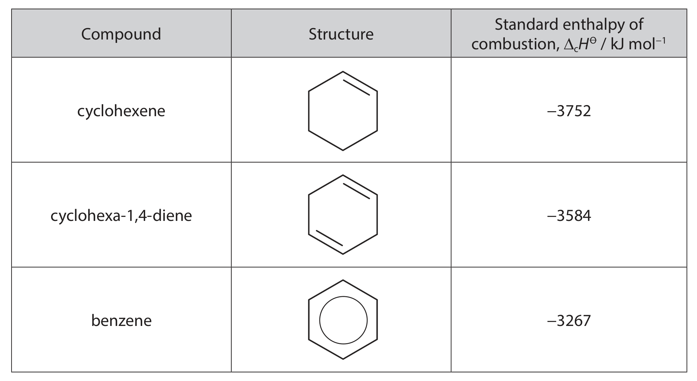
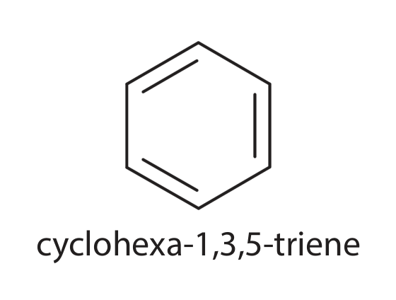
(a)(i) Using the standard enthalpies of combustion of cyclohexene (\(-3752\) kJ mol\(^{-1}\)) and cyclohexa-1,4-diene (\(-3584\) kJ mol\(^{-1}\)), calculate a value for the enthalpy of combustion of the theoretical compound cyclohexa-1,3,5-triene. (2)
(a)(ii) Explain the difference between the enthalpy of combustion of cyclohexa-1,3,5-triene calculated in (a)(i) and the enthalpy of combustion of benzene (\(-3267\) kJ mol\(^{-1}\)). (3)
(b) Bromine reacts with cyclohexene to form 1,2-dibromocyclohexane, and with benzene to form bromobenzene. Compare and contrast these reactions, considering the type and mechanism of each reaction and the conditions required. You are not required to draw the mechanisms. (4)
(c)(i) Identify, by name or formula, the organic product when phenol reacts with excess bromine. (1)
(c)(ii) Explain why bromine reacts much faster with phenol than with benzene. (2)
Detailed markscheme-based answer · 逐小问得分点
- (a)(i) Difference between cyclohexene and cyclohexa-1,4-diene: \(-3752-(-3584)=-168\) kJ mol\(^{-1}\); therefore theoretical cyclohexa-1,3,5-triene \(=-3584-168=\mathbf{-3416}\) kJ mol\(^{-1}\).
- (a)(ii) Benzene combustion is \(-3267\) kJ mol\(^{-1}\), which is 149 kJ mol\(^{-1}\) less exothermic than the theoretical value; benzene is therefore more stable because its six \(π\) electrons are delocalised.
- (b) Both reactions involve electrophilic attack and a carbocation intermediate. Cyclohexene undergoes electrophilic addition at room temperature because a \(π\) bond is broken and two C–Br \(σ\) bonds form. Benzene undergoes electrophilic substitution, retaining aromaticity after loss of \(π\)-system disruption; a halogen carrier and heat are required.
- (c)(i) 2,4,6-tribromophenol, \(\ce{C6H2Br3OH}\); (c)(ii) an oxygen lone pair overlaps with the ring \(π\) system and increases electron density, making electrophilic substitution faster than in benzene. [12]
2021 Oct · U5A Q19 This question is about benzene, \(\ce{C6H6}\), a colourless liquid first isolated in 1825, and some related compounds.
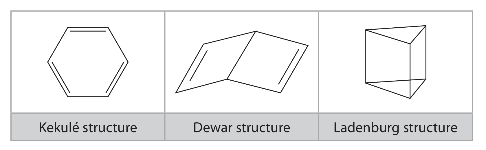
(a) Describe a chemical test, including the result, that could distinguish the Dewar structure from benzene. (2)
(b) State one similarity and one difference expected in the low-resolution proton NMR spectrum of the Ladenburg structure and benzene. Include data from the Data Booklet. (2)
(c) Explain how X-ray diffraction shows that benzene has a delocalised structure and not a Kekulé structure. (2)
(d)(i) The Ladenburg and Dewar structures both isomerise to benzene. The enthalpy changes are \(-376\) kJ mol\(^{-1}\) and \(-297\) kJ mol\(^{-1}\) respectively. Draw a labelled enthalpy-level diagram showing the relative thermodynamic stability of the three structures, including the enthalpy-change values. (2)
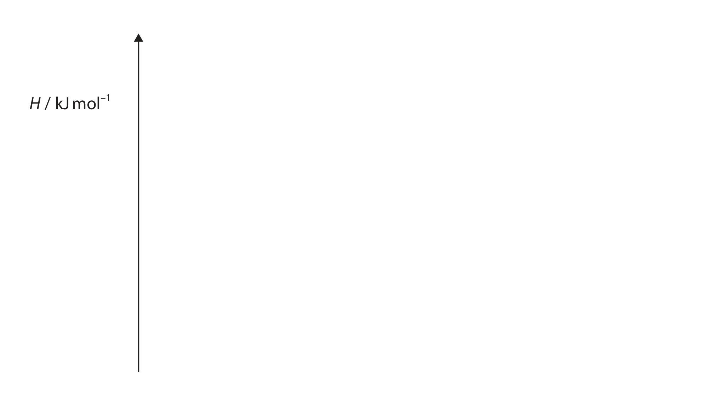
(d)(ii) Give a possible reason why the isomerisation of the Dewar structure to benzene has a lower activation energy than that of the Ladenburg structure to benzene. (1)
(e) The enthalpy change of hydrogenation of hex-3-ene is \(-118\) kJ mol\(^{-1}\). The values for E-hexa-1,4-diene and E-hexa-1,3-diene are \(-236\) and \(-214\) kJ mol\(^{-1}\). Suggest explanations for both values in relation to hex-3-ene. (2)
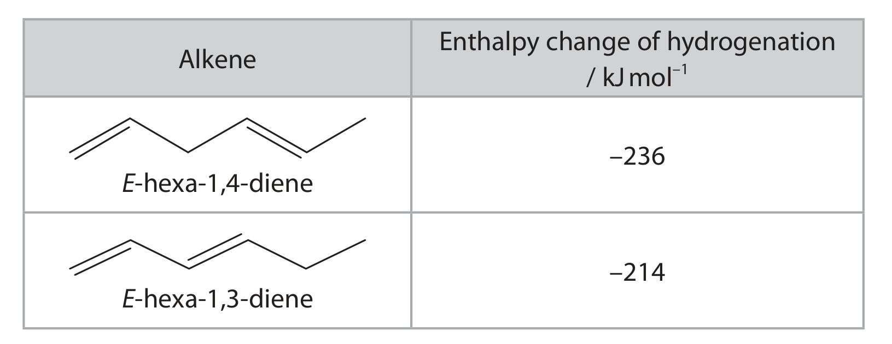
(f)(i) Methylbenzene reacts with ethanoyl chloride in the presence of aluminium chloride to form a mixture of products with formula \(\ce{CH3COC6H4CH3}\). Draw the skeletal formulae of three different arenes with this formula. (2)
(f)(ii) A \(^{13}\)C NMR spectrum of one compound shows two peaks very close in chemical shift. Identify the compound and justify the answer using the number of peaks. (2)
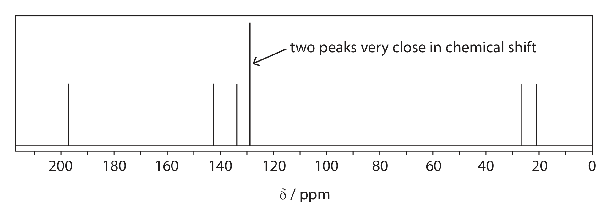
(f)(iii) Complete the mechanism, including curly arrows, for formation of the compound and include an equation for regeneration of the catalyst. (4)
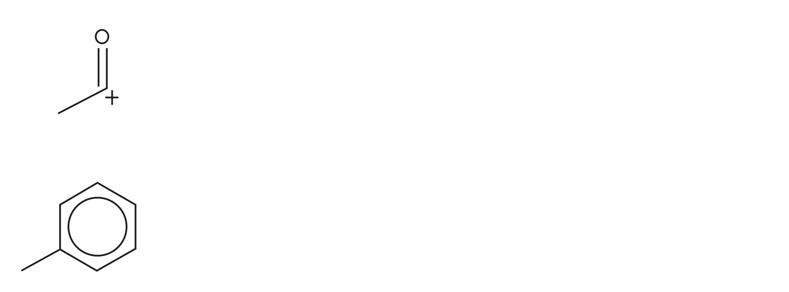
Detailed markscheme-based answer · 逐小问得分点
- (a) Add bromine water: Dewar structure decolourises bromine by addition; benzene shows no change under these conditions.
- (b) Both have one broad proton-NMR signal because all six hydrogens are equivalent; benzene is at about 7.3 ppm, while the Ladenburg structure would have a different chemical shift caused by its different bonding environment.
- (c) X-ray diffraction gives six equal C–C bonds of intermediate length, not alternating single and double bonds.
- (d) Benzene is lowest in enthalpy. Ladenburg \(→\) benzene is \(-376\) kJ mol\(^{-1}\) and Dewar \(→\) benzene is \(-297\) kJ mol\(^{-1}\); Dewar therefore lies higher than Ladenburg by 79 kJ mol\(^{-1}\). Dewar has a more accessible rearrangement pathway, so its activation energy can be lower.
- (e) E-hexa-1,4-diene gives approximately twice the hex-3-ene value because it contains two isolated C=C bonds; E-hexa-1,3-diene is less exothermic because conjugation stabilises it.
- (f)(i) The three positional isomers are the ortho-, meta- and para-methyl-acetophenone structures. (f)(ii) Compound X is the isomer with the greatest symmetry / fewest \(^{13}\)C environments, identified by counting the displayed peaks. (f)(iii) \(\ce{CH3COCl}\) coordinates to \(\ce{AlCl3}\) and forms \(\ce{CH3CO+}\); the ring attacks the acylium ion, the arenium ion loses \(\ce{H+}\), and \(\ce{AlCl4- + H+ -> AlCl3 + HCl}\). [19]
2022 Oct · U5A Q20 Delocalised electron systems are important in determining the chemical properties of some compounds. Compare and contrast the chemical reactions of bromine with benzene and cyclohexene, and with benzene and phenol, by considering the effects of delocalised electrons. Detailed descriptions of the bonds or reaction mechanisms are not required. (6)
Detailed markscheme-based answer · 逐小问得分点
- Benzene and cyclohexene both undergo electrophilic attack. Cyclohexene undergoes addition under normal conditions; benzene undergoes substitution because restoration of aromaticity is favoured and requires a halogen carrier / heat. Phenol undergoes electrophilic substitution more readily than benzene because the oxygen lone pair is delocalised into the ring and raises ring electron density. [6]
2023 May · U5A Q23 Some thermochemical, X-ray diffraction and bromination information on benzene and cyclohexene is shown.
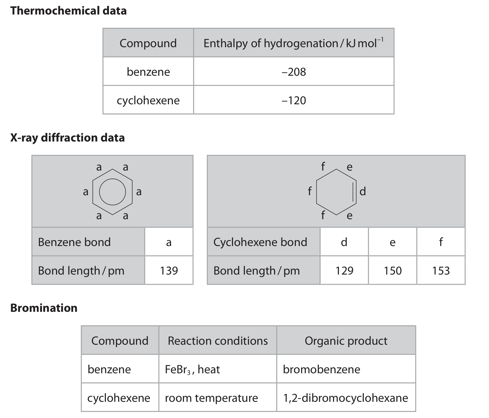
| Compound | Enthalpy of hydrogenation / kJ mol\(^{-1}\) |
|---|---|
| benzene | \(-208\) |
| cyclohexene | \(-120\) |
X-ray diffraction gives a benzene bond length of 139 pm; cyclohexene has bond lengths of 129, 150 and 153 pm. Bromination gives bromobenzene from benzene using \(\ce{FeBr3}\) and heat, but 1,2-dibromocyclohexane from cyclohexene at room temperature.
Explain how all this information provides evidence that the electrons in the \(\pi\)-bonds of benzene are delocalised. (6)
Detailed markscheme-based answer · 逐小问得分点
- X-ray data: benzene C–C bonds are all 139 pm, intermediate between cyclohexene single and double bond lengths, so there are no alternating single / double bonds. Thermochemical data: benzene hydrogenation is \(-208\) kJ mol\(^{-1}\) rather than about three times \(-120\), showing extra aromatic stabilisation. Chemical behaviour: benzene needs \(\ce{FeBr3}\) and heat and gives substitution, whereas cyclohexene adds bromine at room temperature. [6]
2023 Oct · U5A Q20 This question is about benzene and some of its compounds.
(a)(i) Benzene reacts with bromine in the presence of an iron(III) bromide catalyst to form bromobenzene. Draw the mechanism for this reaction, including the formation of the electrophile. (4)
(a)(ii) Compare and contrast the reaction of benzene with bromine with the reactions of cyclohexene with bromine and phenol with bromine. Include reasons for any differences. Detailed mechanisms are not required. (6)
Detailed markscheme-based answer · 逐小问得分点
- (a)(i) \(\ce{Br2 + FeBr3 -> Br+ + FeBr4-}\); a ring \(π\) bond attacks \(\ce{Br+}\) to form the arenium ion; \(\ce{FeBr4-}\) removes \(\ce{H+}\), restoring aromaticity and regenerating \(\ce{FeBr3}\).
- (a)(ii) Benzene gives electrophilic substitution and needs catalyst / heat; cyclohexene gives electrophilic addition at room temperature because loss of aromatic stabilisation is not involved; phenol gives electrophilic substitution under milder conditions because the O lone pair increases ring electron density. [10]
2024 Jan · U5A Q13 In 1865, Friedrich August Kekulé suggested a structure for benzene which consisted of alternating single and double carbon–carbon bonds. However, modern analytical techniques indicate a structure in which the electrons are delocalised.
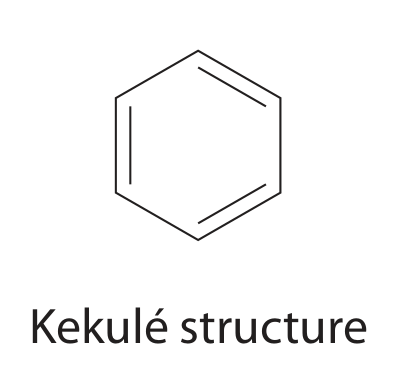
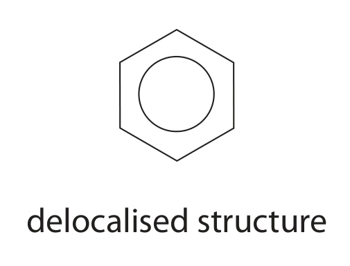
(a) Explain how the results of X-ray diffraction experiments on benzene suggest a delocalised structure rather than the Kekulé structure. (2)
(b) The compound 1,2-dichlorobenzene exists as only one structure. Explain how this supports the delocalised structure of benzene rather than the Kekulé structure. (2)
(c) State how the enthalpy changes of hydrogenation for cyclohexene and benzene provide evidence for the delocalised structure.
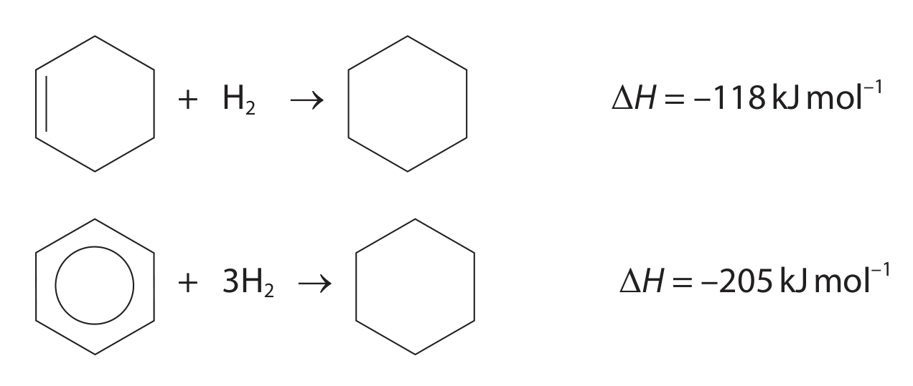
(1)
(d) Describe the structure of benzene in terms of the atomic orbitals involved, the bonds formed and the delocalised electrons. (3)
Detailed markscheme-based answer · 逐小问得分点
- X-ray diffraction shows all six C–C bonds have the same length, intermediate between a C–C single and C=C double bond; this is inconsistent with alternating bonds.
- A Kekulé model predicts four dichlorobenzene isomers, but only one 1,2-dichlorobenzene structure is observed; all ring positions are equivalent.
- Three isolated C=C bonds would give about \(3\times(-120)=-360\) kJ mol\(^{-1}\), but benzene is only \(-205\) kJ mol\(^{-1}\), so benzene is stabilised by delocalisation.
- Six carbon atoms are \(sp^2\) hybridised; each forms three \(σ\) bonds in a planar ring; six unhybridised p orbitals overlap sideways above and below the ring to form a delocalised \(π\) system containing six electrons. [8]
2024 May · U5A Q15 2,6-dichlorophenol is used for communication between ticks, small parasites that can infect animals including humans.
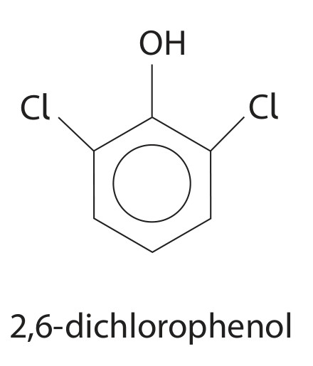
The compound can be synthesised in the laboratory from phenol. 4-phenolsulfonic acid is formed in Reaction A. This is then chlorinated. Hydrolysis of intermediate compound B removes the sulfonic acid group. The reaction scheme is shown.
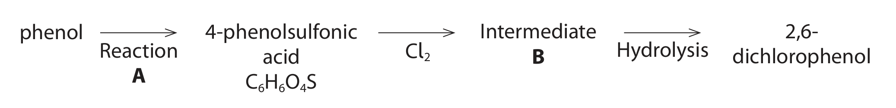
(a)(i) The sulfonation of phenol is similar to the sulfonation of benzene. Suggest the reagent(s) required for Reaction A. (1)
(a)(ii) Deduce the structure of intermediate compound B. (1)
(a)(iii) Explain why the reaction of chlorine with phenol occurs under milder conditions than the reaction of chlorine with benzene. (3)
(b) An alternative synthesis of 2,6-dichlorophenol starts with compound C.
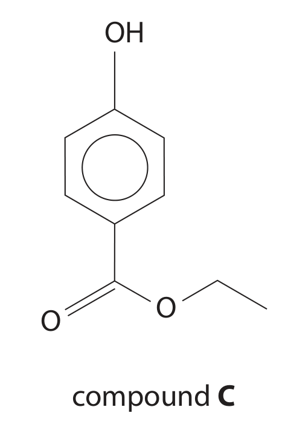
Compound C is chlorinated and hydrolysed and then the CO\(_2\) group is removed (decarboxylation) to form 2,6-dichlorophenol. Other than phenol, name the functional group present in compound C. (1)
(c) Identify three factors that organic chemists would take into account when considering alternative methods for an organic synthesis. (3)
(d) The mass spectrum of 2,6-dichlorophenol is shown.
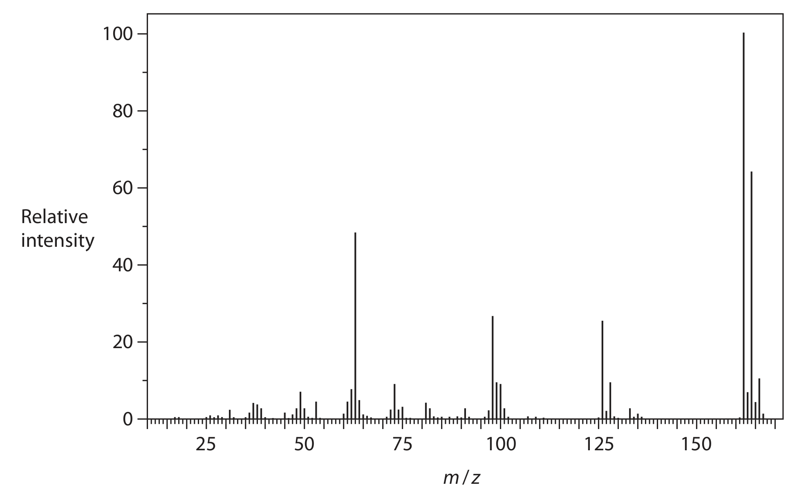
(d)(i) Explain the relative intensities of the peaks at \(m/z\) values of 162, 164 and 166. (2)
(d)(ii) Suggest why there is a corresponding set of peaks at \(m/z\) values of 163, 165 and 167. (1)
Detailed markscheme-based answer · 逐小问得分点
- (a)(i) Concentrated sulfuric acid / fuming sulfuric acid; (a)(ii) chlorine at both positions 2 and 6, with the sulfonic acid group retained; (a)(iii) the oxygen lone pair is delocalised into the ring, increasing electron density and activating the ring, so electrophilic substitution occurs without the harsher benzene conditions.
- ester; (c) yield / atom economy, hazards and environmental impact, cost / availability / energy requirements.
- (d)(i) two chlorine atoms give molecular-ion peaks for the combinations of \(^{35}\)Cl and \(^{37}\)Cl; the 162:164:166 pattern is approximately 9:6:1 because \(^{35}\)Cl is more abundant. (d)(ii) molecules containing one \(^{13}\)C isotope give peaks one mass unit higher. [12]
2026 Jan · U5A Q18 A Friedel–Crafts acylation reaction was carried out using methoxybenzene and ethanoyl chloride, in the presence of aluminium chloride.
The masses were: methoxybenzene 5.25 g, ethanoyl chloride 4.50 g, isomer 1 3.20 g and isomer 2 0.24 g. The relative molecular masses are 108 for methoxybenzene and 78.5 for ethanoyl chloride.
(a)(i) Calculate which is the limiting reagent. (2)
(a)(ii) Calculate the percentage yield of isomer 1. (3)
(b) Draw the mechanism for the reaction producing isomer 1, including the role of \(\ce{AlCl3}\) in this reaction. (5)
(c) Suggest a possible reason why isomer 1 has a significantly higher yield than isomer 2. (1)
Detailed markscheme-based answer · 逐小问得分点
- (a)(i) \(n\) methoxybenzene \(=5.25/108=0.0486\) mol; \(n\) ethanoyl chloride \(=4.50/78.5=0.0573\) mol; methoxybenzene is limiting.
- (a)(ii) theoretical product \(=0.0486\times150=7.29\) g; percentage yield \(=(3.20/7.29)\times100=43.9\%\).
- \(\ce{CH3COCl}\) reacts with \(\ce{AlCl3}\) to form the acylium ion \(\ce{CH3CO+}\); the ring attacks, an arenium ion forms, then loses \(\ce{H+}\) to restore aromaticity; the catalyst is regenerated.
- The methoxy group is an ortho/para director and para substitution is less sterically hindered than ortho substitution. [11]
2026 Jan · U5A Q19 Some values for the enthalpy changes of hydrogenation of different molecules to produce cyclohexane are shown.
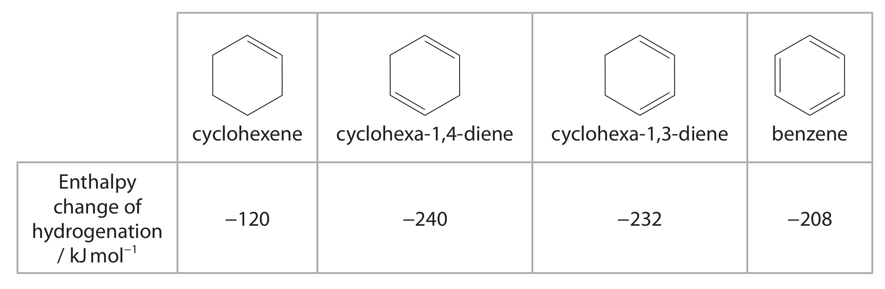
| Molecule | cyclohexene | cyclohexa-1,4-diene | cyclohexa-1,3-diene | benzene |
|---|---|---|---|---|
| Enthalpy change of hydrogenation / kJ mol\(^{-1}\) | \(-120\) | \(-240\) | \(-232\) | \(-208\) |
Explain the differences in the enthalpy changes of hydrogenation for these four molecules. Justify your answer in terms of structure and bonding, and the stability to hydrogenation. (4)
Detailed markscheme-based answer · 逐小问得分点
- Cyclohexene has one localised C=C bond and the most exothermic value per double bond. Cyclohexa-1,4-diene has two isolated C=C bonds and approximately twice the value.
- Cyclohexa-1,3-diene has conjugation, so it is more stable and its hydrogenation is less exothermic than for two isolated double bonds.
- Benzene has a fully delocalised aromatic \(π\) system; its extra stability makes hydrogenation least exothermic per C=C equivalent. [4]
2026 Jan · U5AA Q17 This question is about benzene and some of its compounds.
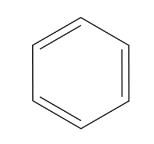
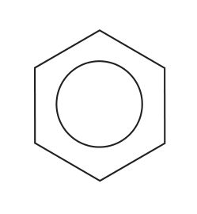
(a) In 1865, Kekulé suggested that the benzene molecule was a six-membered carbon ring with alternate double and single bonds. However, this suggestion does not fully explain the structure and stability of benzene. Explain evidence from three distinct methods that led to this structure of benzene being rejected, in favour of benzene with a ring of delocalised electrons. (3)
(b) Benzene reacts with a mixture of concentrated nitric acid and concentrated sulfuric acid to form nitrobenzene. Draw the mechanism for this reaction, including the formation of the electrophile. (4)
(c) Benzene reacts with pure bromine in the presence of a Friedel–Crafts catalyst. Phenol reacts with bromine water at room temperature.
(c)(i) Write the equation for the reaction between phenol and excess bromine water. State symbols are not required. (2)
(c)(ii) Explain why phenol reacts with bromine under much milder conditions than those required for the reaction between benzene and bromine. (2)
(d) (1-Chloroethyl)benzene is used in perfumes and can be produced in two steps from 1-phenylethan-1-one. Draw the structure of compound Z.
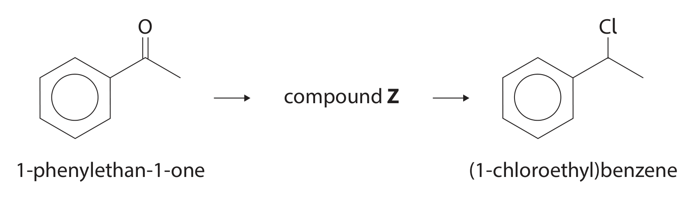
(1)
(e) N-phenylethanamide can be produced from nitrobenzene in a two-step process. State the reagents and reaction conditions for each step. (2)
Detailed markscheme-based answer · 逐小问得分点
- Any three valid methods: X-ray diffraction gives equal intermediate C–C bond lengths; hydrogenation is less exothermic than expected for three isolated double bonds; benzene resists bromine addition and undergoes substitution with a catalyst; NMR gives one proton environment.
- \(\ce{HNO3 + 2H2SO4 -> NO2+ + 2HSO4- + H3O+}\); benzene attacks \(\ce{NO2+}\), the arenium ion forms, then loses \(\ce{H+}\) to restore aromaticity.
- (c)(i) \(\ce{C6H5OH + 3Br2 -> C6H2Br3OH + 3HBr}\); (c)(ii) the O lone pair increases electron density in the ring, so electrophilic substitution is faster and no halogen carrier is needed.
- 1-phenylethan-1-ol; (e) Step 1: \(\ce{Sn/HCl}\) (or suitable reduction conditions), heat / reflux; Step 2: ethanoyl chloride or ethanoic anhydride, suitable conditions. [14]
Multiple-choice bank · 选择题
以下为 2021–2026 Unit 5 QP 中直接考查 Topic 18 的完整 MCQ / short MCQ items。每道题保留完整题干和 options；答案与 explanation 默认隐藏。
2021 Jan · U5A Q10 The delocalised electrons in benzene result from the overlap of
A s orbitals to form \(σ\) bonds
B s orbitals to form \(π\) bonds
C p orbitals to form \(σ\) bonds
D p orbitals to form \(π\) bonds
Show answer · 答案 + detailed explanation
Answer: D. Sideways overlap of p orbitals forms the delocalised \(π\) system.2021 Jan · U5A Q11 The reaction of ethene with bromine occurs under normal laboratory conditions but the reaction of benzene with bromine to form bromobenzene requires heat and the presence of a catalyst. The best explanation for the difference in reactivity is that the delocalised electrons in benzene
A repel electrophiles
B result in a kinetic barrier to intermediate formation
C result in benzene having an endothermic enthalpy of formation
D make benzene thermodynamically stable with respect to the formation of bromobenzene
Show answer · 答案 + detailed explanation
Answer: B. Electrophilic attack temporarily removes aromatic stabilisation, creating a kinetic barrier.2021 May · U5A Q9 Benzene is sometimes represented by a Kekulé structure. If this were the only structure of benzene, what would be the total number of isomers of dichlorobenzene?
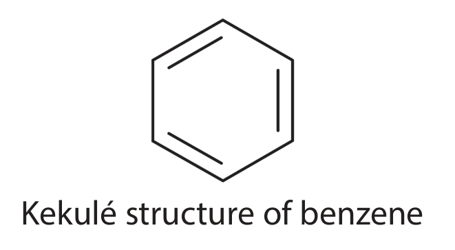
A two
B three
C four
D five
Show answer · 答案 + detailed explanation
Answer: C. The alternating-bond Kekulé model gives four positional arrangements; the delocalised model explains why only three are observed.2021 May · U5A Q10 What is the product when benzene reacts with fuming sulfuric acid?
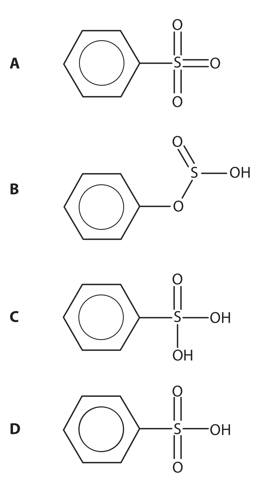
The four complete structural options (A–D) are shown in the extracted QP figure above.
Show answer · 答案 + detailed explanation
Answer: D. The correct QP structure is benzenesulfonic acid, with the substituent \(\ce{-SO3H}\) attached through sulfur to the benzene ring.2021 Oct · U5A Q11 Which of these could not be formed when excess benzene is heated with trichloromethane, \(\ce{CHCl3}\), in the presence of an aluminium chloride catalyst?
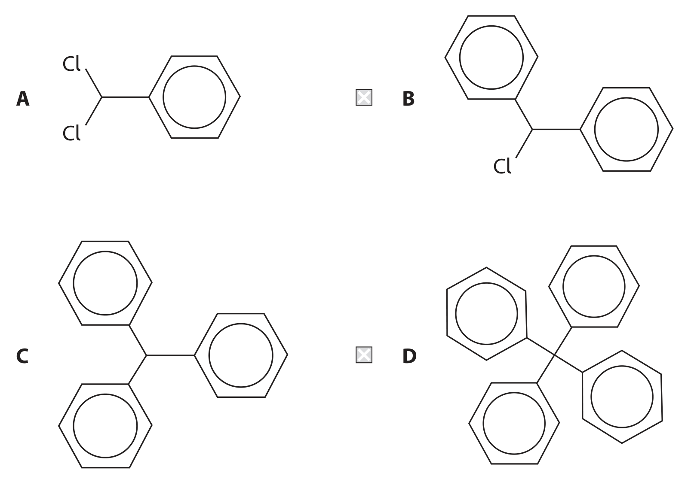
The four complete structural options are shown in the extracted QP figure above.
Show answer · 答案 + detailed explanation
Answer: D. Friedel–Crafts alkylation substitutes aromatic hydrogen with the electrophile derived from \(\ce{CHCl3}\); the D structure cannot be obtained by the permitted substitution pattern.2021 Oct · U5A Q12 What is the molar mass, in g mol\(^{-1}\), of the organic product when phenol reacts with excess bromine water?
A 156.9
B 172.9
C 330.7
D 488.5
Show answer · 答案 + detailed explanation
Answer: C. Excess bromine substitutes at the 2, 4 and 6 positions to give \(\ce{C6H2Br3OH}\), \(M_r=330.7\).2022 Jan · U5A Q6 Methylbenzene reacts with a mixture of concentrated nitric acid and concentrated sulfuric acid to form 2,4,6-trinitromethylbenzene.
(a) What is the number of peaks in the \(^{13}\)C NMR spectrum of methylbenzene? (1)
A seven B six C five D four
(b) What type of reaction takes place? (1)
A nucleophilic addition B nucleophilic substitution C electrophilic addition D electrophilic substitution
(c) Which expression shows the mass in grams of 2,4,6-trinitromethylbenzene formed from 10 g of methylbenzene if the yield of the reaction is 85%? [\(M_r\): methylbenzene = 92; 2,4,6-trinitromethylbenzene = 227] (1)
A \((10\times85\times227)\div(92\times100)\) B \((10\times100\times227)\div(92\times85)\) C \((10\times100\times227)\div(92\times115)\) D \((10\times115\times227)\div(92\times100)\)
Show answer · 答案 + detailed explanation
Answers: C, D, A. Methylbenzene has five carbon environments; nitration is electrophilic substitution; theoretical mass is multiplied by 85/100.2022 Oct · U5A Q10 How many \(σ\) bonds and \(π\) bonds are there in a molecule of benzene?
| \(σ\) bonds | \(π\) bonds | |
|---|---|---|
| A | 6 | 3 |
| B | 6 | 6 |
| C | 12 | 3 |
| D | 12 | 6 |
Show answer · 答案 + detailed explanation
Answer: C. Benzene contains six C–C \(σ\) bonds, six C–H \(σ\) bonds and three delocalised \(π\) bonds.2022 Oct · U5A Q11 Benzene reacts with fuming sulfuric acid to form benzenesulfonic acid. Fuming sulfuric acid is
A sulfuric acid with a concentration of 98%
B pure sulfuric acid
C concentrated sulfuric acid containing dissolved sulfur dioxide
D concentrated sulfuric acid containing dissolved sulfur trioxide
Show answer · 答案 + detailed explanation
Answer: D. Fuming sulfuric acid is concentrated sulfuric acid containing dissolved \(\ce{SO3}\).2023 May · U5A Q15 What is the total number of delocalised electrons in anthracene?
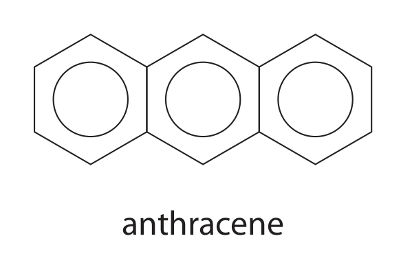
A 6 B 10 C 14 D 18
Show answer · 答案 + detailed explanation
Answer: C. Anthracene has fourteen delocalised \(π\) electrons across its fused ring system.2023 May · U5A Q16 Which statement explains why bromine reacts more readily with phenol than with benzene?
A the O–H bond in phenol is polar
B the oxygen atom in phenol is very electronegative
C a lone pair of electrons on oxygen in phenol is delocalised into the ring
D the electron density in the ring is greater in benzene than in phenol
Show answer · 答案 + detailed explanation
Answer: C. Lone-pair donation from oxygen increases electron density in the aromatic ring.2024 May · U5A Q7 Which type of data is not used as evidence for the structure or stability of the benzene ring?
A infrared spectroscopy
B mass spectrometry
C thermochemical
D X-ray diffraction
Show answer · 答案 + detailed explanation
Answer: B. Mass spectrometry gives molecular mass / fragmentation information, not direct evidence for benzene bond equality or aromatic stabilisation in this context.2024 May · U5A Q8 The formation of nitrobenzene requires benzene and concentrated nitric and sulfuric acids. Which is an equation for the reaction to form the electrophile?
A \(\ce{HNO3 + H2SO4 -> NO2+ + SO4^{2-} + H3O+}\)
B \(\ce{HNO3 + 2H2SO4 -> NO2+ + 2HSO4- + H3O+}\)
C \(\ce{HNO2 + 2H2SO4 + H2O -> NO3+ + 2HSO4- + 5H+}\)
D \(\ce{HNO3 + 3H2SO4 + OH- -> NO2 + 3HSO4- + H3O+ + H2O}\)
Show answer · 答案 + detailed explanation
Answer: B. Sulfuric acid protonates nitric acid and the subsequent loss of water produces \(\ce{NO2+}\).2024 May · U5A Q9 Phenol reacts with bromine to form 2,4,6-tribromophenol: \(\ce{C6H5OH + 3Br2 -> C6H2Br3OH + 3HBr}\). [\(M_r\): \(\ce{C6H5OH}=94.0\), \(\ce{Br2}=159.8\), \(\ce{C6H2Br3OH}=330.7\), \(\ce{HBr}=80.9\)]
(a) What is the percentage atom economy by mass for the formation of 2,4,6-tribromophenol? (1)
A 42.3% B 57.7% C 69.0% D 100%
(b) When 5.00 g of phenol was reacted and purified, the percentage yield of 2,4,6-tribromophenol was 76.8%. What mass of purified 2,4,6-tribromophenol was formed? (1)
A 3.84 g B 13.5 g C 17.6 g D 22.9 g
Show answer · 答案 + detailed explanation
Answers: B, B. (a) Atom economy \(=330.7/(94.0+3\times159.8)\times100=57.7\%\). (b) Theoretical product \(=(5.00/94.0)\times330.7=17.6\) g; actual mass \(=17.6\times0.768=13.5\) g.2024 Oct · U5A Q6 Naphthalene is an aromatic molecule with two aromatic rings joined together. It can be nitrated at position 1 as shown.
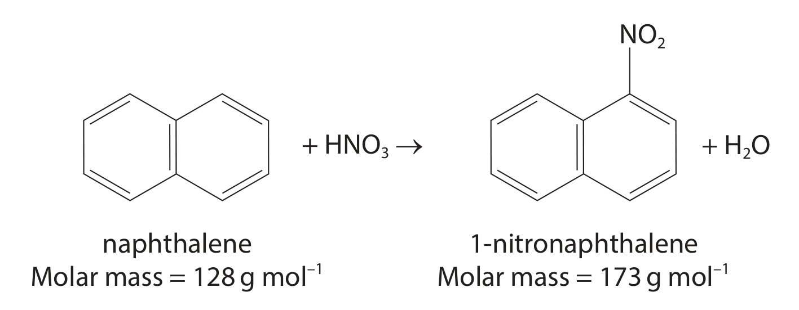
Molar mass of naphthalene = 128 g mol\(^{-1}\); molar mass of 1-nitronaphthalene = 173 g mol\(^{-1}\).
(a) In an experiment, a 2.00 g sample of naphthalene was nitrated and produced 2.57 g of 1-nitronaphthalene. What is the percentage yield? (1)
A 95.1% B 77.8% C 74.0% D 57.6%
(b) A student calculated a percentage yield greater than 100%. What is the most likely explanation? (1)
A unreacted naphthalene was present B naphthalene was impure C the sample of 1-nitronaphthalene was damp D other isomers were produced
Show answer · 答案 + detailed explanation
Answers: B, C. Use the 1:1 mole ratio for (a); a damp product has extra water mass, making the apparent yield too high.2024 Oct · U5A Q10 An aromatic compound with a ten-carbon ring has the structure shown.
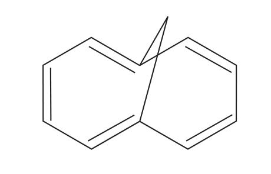
(a) Evidence for the aromaticity of this compound is that the carbon–carbon bonds in the ten-carbon ring (1)
A alternate in length between single and double bonds
B all have similar lengths
C have no regular pattern of bond length
D are all similar to the carbon–carbon double bond length
(b) The aromaticity is due to the formation of pi (\(π\)) bonds as a result of overlap of (1)
A s and p orbitals B p and d orbitals C p orbitals D d orbitals
Show answer · 答案 + detailed explanation
Answers: B, C. Aromatic delocalisation gives similar bond lengths; sideways overlap of p orbitals forms the \(π\) system.2025 May · U5AA Q10 Benzene is nitrated using a mixture of concentrated nitric and sulfuric acids. In this reaction, the sulfuric acid
A dissolves both benzene and nitric acid
B forms an addition compound with benzene
C protonates the nitric acid
D protonates the benzene
Show answer · 答案 + detailed explanation
Answer: C. Protonation of nitric acid enables formation of the electrophile \(\ce{NO2+}\).2025 May · U5AA Q11 Which is the best technique to show that the carbon–carbon bonds in benzene are all the same length?
A infrared spectroscopy B mass spectrometry C high resolution proton NMR spectroscopy D X-ray diffraction
Show answer · 答案 + detailed explanation
Answer: D. X-ray diffraction directly measures bond lengths.2025 May · U5AA Q13 The reaction between chlorine and phenol is faster than that between chlorine and benzene. Which is the best explanation for this?
A the carbon–oxygen bond is weaker than the carbon–hydrogen bonds
B oxygen is more electronegative than carbon
C the phenol ring has greater electron density than the benzene ring
D phenol is more acidic than benzene
Show answer · 答案 + detailed explanation
Answer: C. The O lone pair is delocalised into the ring and increases its electron density.2025 Oct · U5A / U5AA Q1 Which is the equation for the reaction of phenol with bromine water?
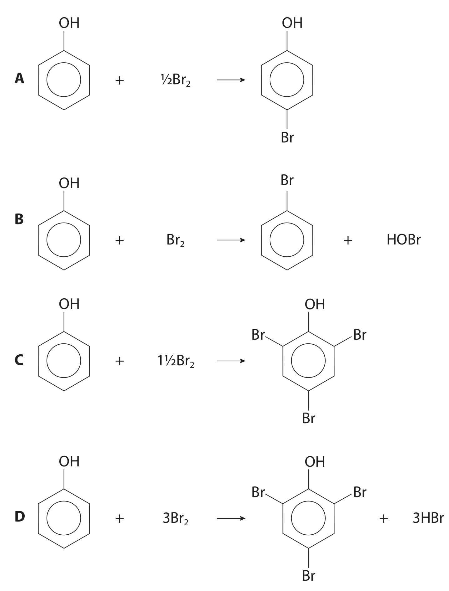
A \(\ce{C6H5OH + HBr -> C6H5Br + H2O}\)
B \(\ce{C6H5OH + Br2 -> C6H5Br + HBr + O}\)
C \(\ce{C6H5OH + 3Br2 -> C6H2Br3OH + 3HBr}\)
D \(\ce{C6H5OH + 3Br2 -> C6H3Br3 + 3HBr + H2O}\)
Show answer · 答案 + detailed explanation
Answer: C. Bromine substitutes at positions 2, 4 and 6 while the –OH group remains on the ring.2025 Oct · U5A / U5AA Q2 If benzene has the structure suggested by Kekulé, then there should be four isomers of dichlorobenzene as shown. In the correct delocalised model there are only three. Which two Kekulé isomers are actually the same?
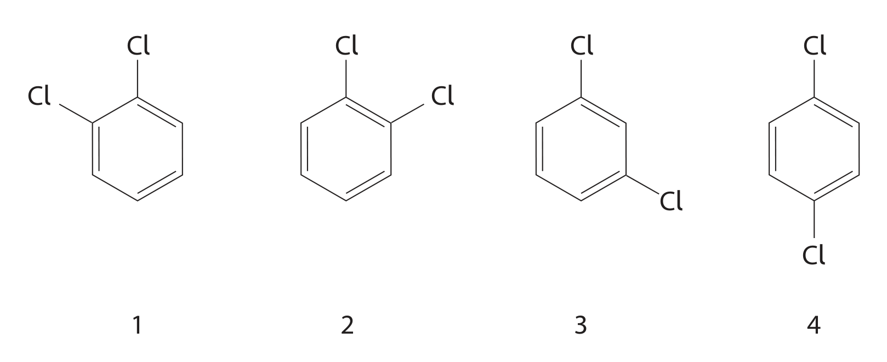
A 1 and 2 B 1 and 4 C 2 and 3 D 3 and 4
Show answer · 答案 + detailed explanation
Answer: B. Ring symmetry and delocalisation make the two displayed arrangements equivalent.2025 Oct · U5A / U5AA Q3 The delocalised model of the aromatic benzene structure involves the overlap of p orbitals to form \(π\)-bonds.
(a) Which describes this p orbital overlap to form \(π\)-bonds only? (1)
A head-on overlap in the plane of the ring B head-on overlap above and below the plane C sideways overlap in the plane D sideways overlap both above and below the plane
(b) Which property of benzene is not due to delocalisation of the \(π\)-bonds? (1)
A enthalpy of hydrogenation less exothermic than calculated for Kekulé benzene B all C–C bond lengths the same C all C–H bond lengths the same D all C–C bonds give the same infrared stretching vibration peaks
Show answer · 答案 + detailed explanation
Answers: D, C. p orbitals overlap sideways above and below the plane; C–H bond equality is not a consequence specific to \(π\) delocalisation.2025 Oct · U5A / U5AA Q4 Benzene undergoes electrophilic substitution in the presence of a catalyst to form phenylethanone.
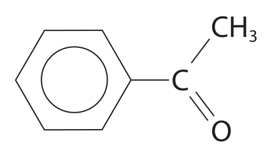
(a) Which reagent is used to react with benzene to form phenylethanone? (1)
A \(\ce{CH3COOH}\) B \(\ce{CH3COCH3}\) C \(\ce{CH3COCl}\) D \(\ce{CH3CONH2}\)
(b) Which compound is not a catalyst that can be used to form the electrophile for this reaction? (1)
A \(\ce{AlCl3}\) B \(\ce{FeBr3}\) C \(\ce{FeCl3}\) D \(\ce{PCl5}\)
(c) Which is the electrophile for this reaction? (1)
A \(\ce{CH3COO-}\) B \(\ce{CH3CO+}\) C \(\ce{CH3CO}\) D \(\ce{CH3CO:}\)
Show answer · 答案 + detailed explanation
Answers: C, D, B. Ethanoyl chloride supplies the acylium ion in the presence of a Lewis-acid catalyst; \(\ce{PCl5}\) is not the catalyst listed for this Friedel–Crafts acylation.2026 May · U5A Q9 Which does not provide evidence for the delocalised model for the structure of benzene?
A infrared spectroscopy B mass spectrometry C thermochemistry D X-ray diffraction
Show answer · 答案 + detailed explanation
Answer: B. Mass spectrometry does not directly establish equal bond lengths or aromatic stabilisation.2026 May · U5A Q10 Which is correct for the formation of the delocalised ring of electrons in benzene?
| Orbital overlap | Bond formed |
|---|---|
| A p–p | \(σ\) |
| B p–p | \(π\) |
| C s–s | \(σ\) |
| D s–s | \(π\) |
Show answer · 答案 + detailed explanation
Answer: B. Sideways p–p overlap gives delocalised \(π\) bonding.2026 May · U5AA Q6 How many isomers have the molecular formula \(\ce{C6H4BrCl}\) and contain a benzene ring?
A 3 B 4 C 5 D 6
Show answer · 答案 + detailed explanation
Answer: C. Counting the distinct positional arrangements of Br and Cl on a disubstituted benzene ring gives five.2026 May · U5AA Q9 What is the organic product when phenol reacts with excess bromine water?
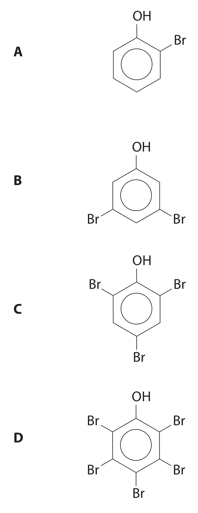
A 2-bromophenol B 4-bromophenol C 2,4-dibromophenol D 2,4,6-tribromophenol
Show answer · 答案 + detailed explanation
Answer: D. The activated ring undergoes substitution at all three positions directed by –OH.2026 May · U5AA Q11 Which technique provides the best evidence that the carbon–carbon bonds in benzene are all the same length?
A X-ray diffraction B proton NMR spectroscopy C infrared spectroscopy D calorimetry
Show answer · 答案 + detailed explanation
Answer: A. X-ray diffraction measures the bond lengths directly.2026 May · U5AA Q12 Which is formed when benzene reacts with fuming sulfuric acid?
A \(\ce{C6H5SO3}\) B \(\ce{C6H5SO3H}\) C \(\ce{C6H5SO3H2}\) D \(\ce{C6H5SO4H}\)
Show answer · 答案 + detailed explanation
Answer: B. Electrophilic substitution gives benzenesulfonic acid, \(\ce{C6H5SO3H}\).Source note
本页面对应：Note per Chapter/Note per Chapter/5.4 Organic Chemistry Arenes.pdf.pdf；考纲范围对应 International-A-Level-Chemistry-Spec 的 Topic 18: Organic Chemistry - Arenes（18.1–18.6）。本题库现含 10 组 structured questions、29 个 MCQ / short-MCQ items，覆盖 2021–2026 Unit 5 中直接考查 Topic 18 的题目；QP 中的结构、反应路线、数据图均优先使用 PastPaper/Unit5/extracted_figures/*/adjusted 的独立提取图，并复制到 assets/notes/arenes-pastpapers/。